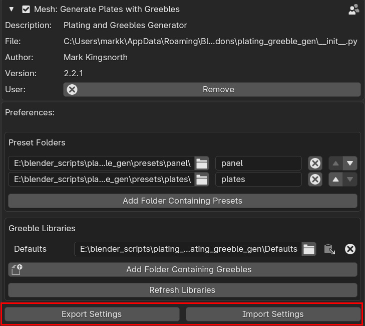

Import and Export Settings
When updating the Plating Generator, you can export and import your Presets, Greeble Libraries and other general settings. Your settings will be saved to a .JSON file.
To Export Settings
Go to Edit - Preferences in Blender.
Go to the Add-Ons section.
Search for the Plating and Greebles Generator add-on.
At the bottom, there will be an Export Settings button.
Click the button and choose the directory and name of the JSON file.
Click Export Settings.
To Import Settings
Go to Edit - Preferences in Blender.
Go to the Add-Ons section.
Search for the Plating and Greebles Generator add-on.
At the bottom, there will be an Import Settings button.
Click the button and navigate to the JSON file you exported earlier.
Click Import Settings.